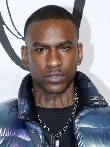
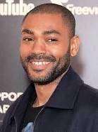
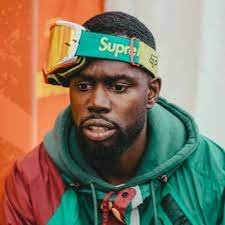
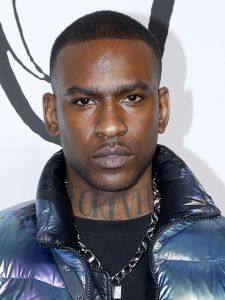
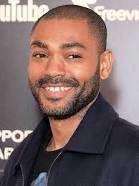
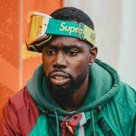
 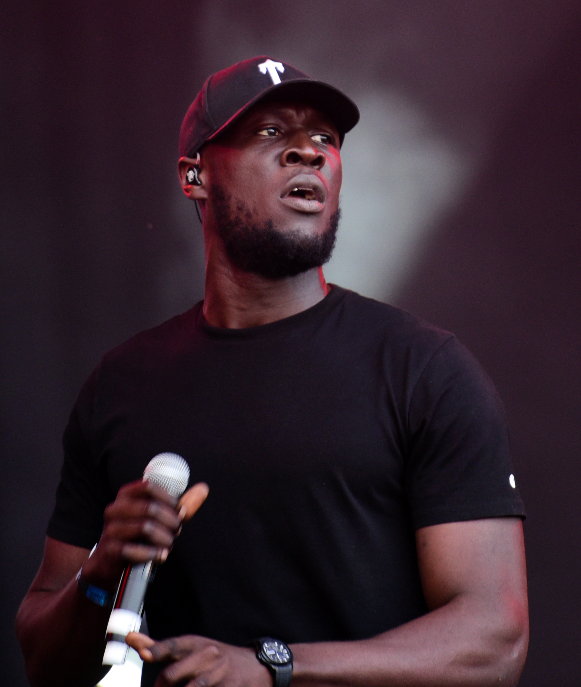
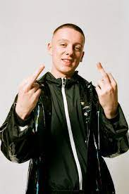
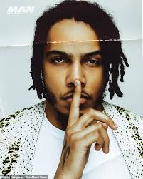
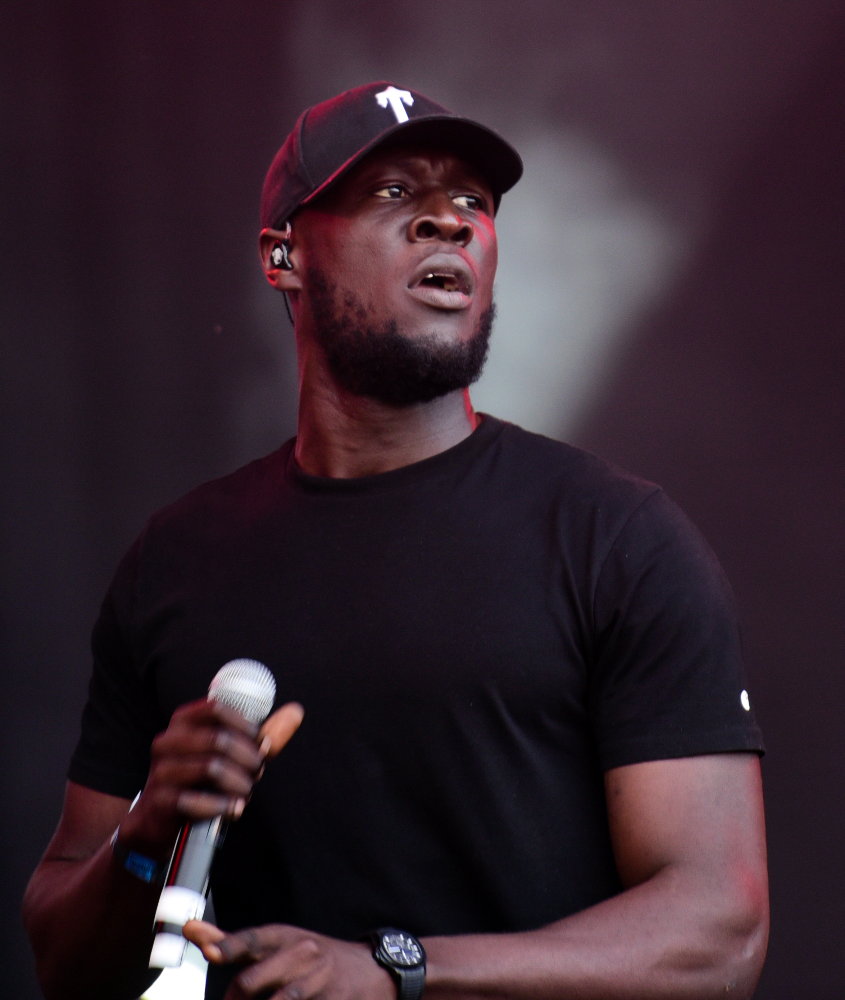
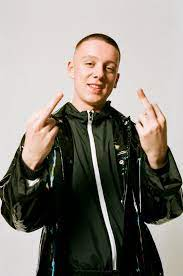
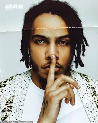
 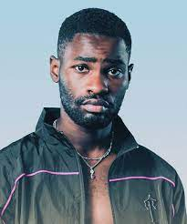
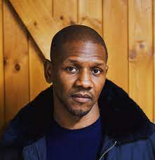
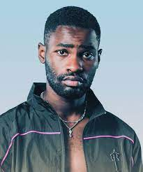
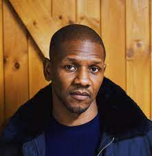
Grime is an eclectic style of British rap music that emerged in London in the early 2000s. Evolving from the UK garage music scene of the 1990s in London, grime music also includes hip hop, rap, and hardcore techno influences. Grime music is characterized by fast beats, electronic sounds, UK accents, and frenetic energy. The grime music scene is made up of grime crews, collectives of musicians that produce music together and perform at nightlife venues, often those that are small-scale or “underground.”
Wiley : Wiley is one of the pioneering musicians of grime music. He started making music in the early 2000s in East London, and later connected with other grime musicians to form his crew Roll Deep. His early song "Wot Do U Call It?" cemented the grime signature sound.
Dizzee Rascal : Dizzee Rascal was an early member of the Roll Deep crew. His debut album Boy in da Corner won him a Mercury Prize—which is a UK award presented to British or Irish artists—and his career soared with hits including "Bonkers," "Dance Wiv Me," and "Holiday."
Skepta : Skepta is a North London rapper, and another early member of the Roll Deep crew. He started his own crew Boy Better Know with fellow grime musician JME in 2005. He released his first album Greatest Hits in 2005, and his 2016 album Konnichiwa won a Mercury Prize, signaling a renaissance for grime music.
Kano : London rapper Kano’s first single "Ps and Qs" from 2004 was an underground hit, and he released his first album London Town in 2007. His popularity grew in the 2010s, with his 2016 album Made in the Manor reaching number 8 on the UK charts.
Ghetts : Ghetts is a British rapper who was originally a member of the grime collective NASTY Crew. In 2008, his own grime crew—called Movement—was nominated for the BET Award for Best International Act: UK.
Lethal Bizzle : Lethal Bizzle is a London rapper who became a grime MC in 2002 with the More Fire Crew, alongside Ozzie B and Neeko. The group hosted a show on Deja Vu FM, one of London's most popular pirate radio stations. Lethal Bizzle's debut single "Pow!" became a signature song of the grime sound.
Stormzy: Next-generation grime rapper Stormzy gained attention online for rapping over classic grime beats, with his freestyle rap "Shut Up" catching wide attention on YouTube. His debut album Gang Signs and Prayers from 2017 was the first grime album to win British Album of the Year at the 2018 Brit Awards, and it reached number 1 on the UK charts.
Want to Learn More About Music? Visit GRM DAILY
Visit us on Instagram at the.random.guy_